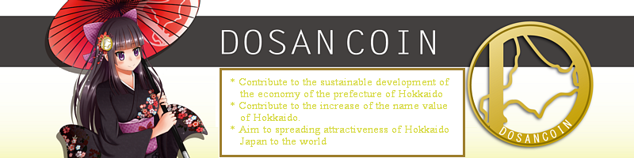

Dosancoin (DOS) Events

Dosancoin Events
5th January 2021
The Dosancoin (DOS) Community Team is proud to announce that we hold "UniSwap Trading contest" in January, 2021.
Anyone can participate it.
UNISWAP TRADING CONTEST DETAILS:
We will be conducting a trial of the trade contest, and here are the details:
STARTS: 5th January -- 00:00:00 GMT
ENDS: 18th January -- 23:59:59 (two weeks) GMT
HOW TO WIN: To achieve the highest transaction volume during these two weeks (buys, sells and adding liquidity)
Pair: DOS/ETH
https://info.uniswap.org/pair/0x770208d29edcd3f93c45dc6db8fa4f5996c765f1
UniSwap: (Buy DOS)
https://app.uniswap.org/#/swap?inputCurrency=ETH&outputCurrency=0x9acbca1b2f4ecfae110b14bace23bae23a39fdc6
UniSwap: (Sell DOS)
https://app.uniswap.org/#/swap?inputCurrency=0x9acbca1b2f4ecfae110b14bace23bae23a39fdc6&outputCurrency=ETH
UniSwap: (Add Liquidity)
https://app.uniswap.org/#/add/0x9acbca1b2f4ecfae110b14bace23bae23a39fdc6/ETH
PRIZES:
1st - 10,000,000 DOS
2nd - 5,000,000 DOS
3rd - 2,500,000 DOS
4th - 1,500,000 DOS
5th - 1,000,000 DOS
By adding liquidity you'll be able to earn 0.3% of all trades on this pair proportional to your share of the pool. Fees are added to the pool, accrue in real time and can be claimed by withdrawing your liquidity. In this contest, the total "added liquidity" will be considered and calculated as 5 times as the normal trading volume, and the final result of the contest will be determined accordingly.
Enjoy!!
-- The Dosancoin Community Team
What is Dosancoin?
DosanCoin (DOS) is a community token whose purpose is to develop the economy of the prefecture of Hokkaido, Japan and increase the name value of it.
It is also a cryptographic asset created for the purpose of creating and supplying stable value as a currency and contributing to the economic development of the prefecture of Hokkaido, Japan and other Asian countries through crypto currency, in other words, spreading the attractiveness of Hokkaido, Japan to the world.
[Dosanko] means people originally from the prefecture of Hokkaido, Japan.
wDOS is a "waves" platform version token of [DosanCoin].
----
DOS (ERC20)
0x9aCbcA1B2F4EcFAe110B14bace23bAE23A39fdc6
https://etherscan.io/token/0x9acbca1b2f4ecfae110b14bace23bae23a39fdc6
wDOS (waves)
BuqrQGtSNPj4jQkvzX92UgSkfed7ArW6zmKwHbeyZ5Pf
https://dev.pywaves.org/assets/BuqrQGtSNPj4jQkvzX92UgSkfed7ArW6zmKwHbeyZ5Pf
Telegram (Announcement)
https://t.me/dosancoin
Telegram (Community)
https://t.me/joinchat/Ko8N2xm-jZ2Bkq8VVrf0cA
Discord
https://discord.gg/QMJJ7pfCZv
Twitter
https://twitter.com/dosancoin1
Facebook Page
https://www.facebook.com/Dosancoin/
H2OX
https://h2ox.io/waves/asset/BuqrQGtSNPj4jQkvzX92UgSkfed7ArW6zmKwHbeyZ5Pf
CCTip (ERC20-DOSANCOIN)
https://my.cctip.io/token/details/1/0x9aCbcA1B2F4EcFAe110B14bace23bAE23A39fdc6
Exchange (DOSANCOIN/BTC pair) -- ATAIX
https://ataix.com/currencies/DOS
UniSwap
https://app.uniswap.org/#/swap?inputCurrency=ETH&outputCurrency=0x9aCbcA1B2F4EcFAe110B14bace23bAE23A39fdc6
WebSite
https://en.dosancoin.com/ (English)
https://dosancoin.com/ (Japanese)